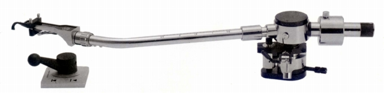
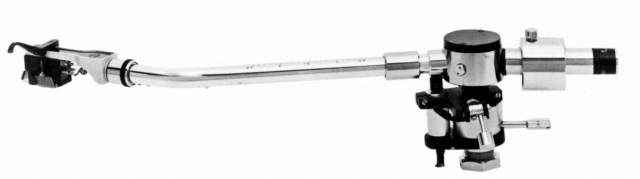

AT-1009


■価格 16,800円
■型式 スタティックバランス型
■全長 330�o
■実行長 240�o
■オーバー・ハング 15�o
■針圧範囲 0〜2.5g 0.1gステップ
■アーム高さ 48〜70�o
■アームベース穴 17�o
■トラッキングエラー 最大1.30゜
■アンチスケートディバイス あり
■アームリフター あり
■ラテラルバランサー なし
■カートリッジ自重 4〜12g 予備ウェイト(C-3型
1.000円)使用で20gまで
■線間容量 80pF
■発売 1972年1月
■販売終了 1979年
■備考 最大トラッキング・エラー角＝1″30′
ヘッドシェル D-7型
垂直軸受 ピボット・ベアリング
水平軸受 ラジアル・ボール
リモコン・エアリフト付きのアーム
価格は1973年頃のもの
ロングセラー機であり、1970年代後半まで販売が続いた。
1978年10月版カタログでは19,000円。
スペアシェル D-7型 1,800円
交換カウンター・ウェイト C-3型 1,500円
専用アームベース 1,500円
専用アームレスト 500円
テクニカのインデックスへ